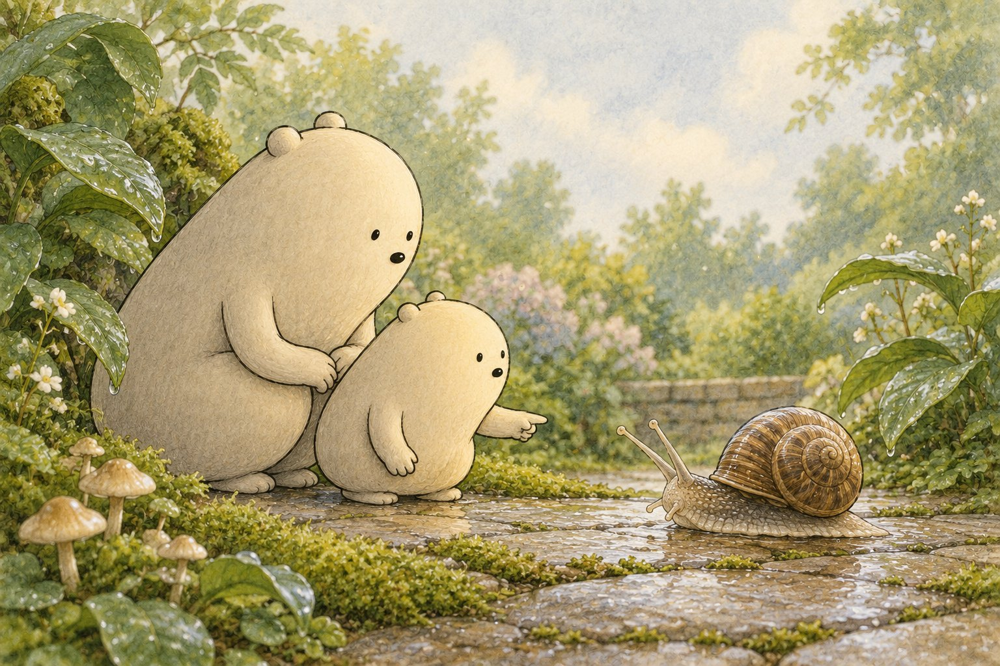
Read aloud together
Drip. Drop. Glimmer. (Wiggle two fingers like snail tentacles.) Big Wonderer and Little Wonderer visit the garden after rain. Beside a leaf, a round shell seems to move.
A garden snail peeks out. Two long tentacles stretch into the air. On many land snails, tiny eyes sit at their tips. Shorter tentacles help sense what is nearby.
Ask: Can you point to the snail's longest tentacles?
Under the shell, a wide, muscular foot makes gentle ripples. The snail glides forward on a thin layer of slippery mucus. Slowly, smoothly, softly. (Slide one hand across the other.)
Ask: What shiny trail can you spot behind the snail?
The shell is part of the snail's body. It grows as the snail grows and helps protect the soft body. When the garden feels dry or dangerous, the snail can pull inside.
Ask: How slowly can your finger glide like a snail?
Big Wonderer and Little Wonderer watch without touching. The snail reaches a tender leaf, and its tentacles gently wave. One small traveler has crossed a very big garden path.
Why this morning matters
Following a snail's slow glide helps your child notice how animals move while practicing counting, sounds and tracing.
Tonight, step by step
- Read the story aloud together and stop at each “Ask”.
- Print the pack and pick two or three pages; there is no need to do them all.
- Point, circle, trace and color. Snip only with a grown-up.
- Fold the picture book and read it again at bedtime.
Inside the printout
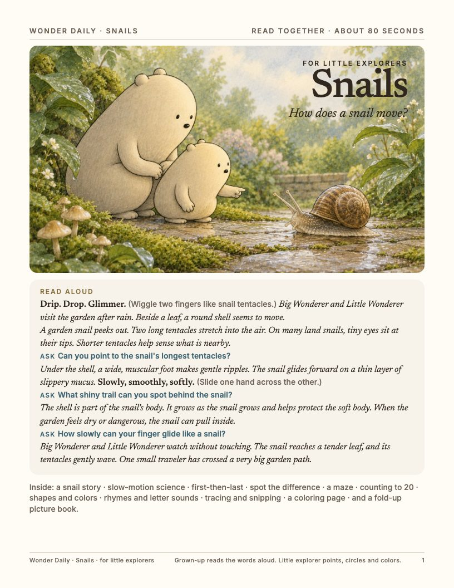
1. Cover and read-aloud 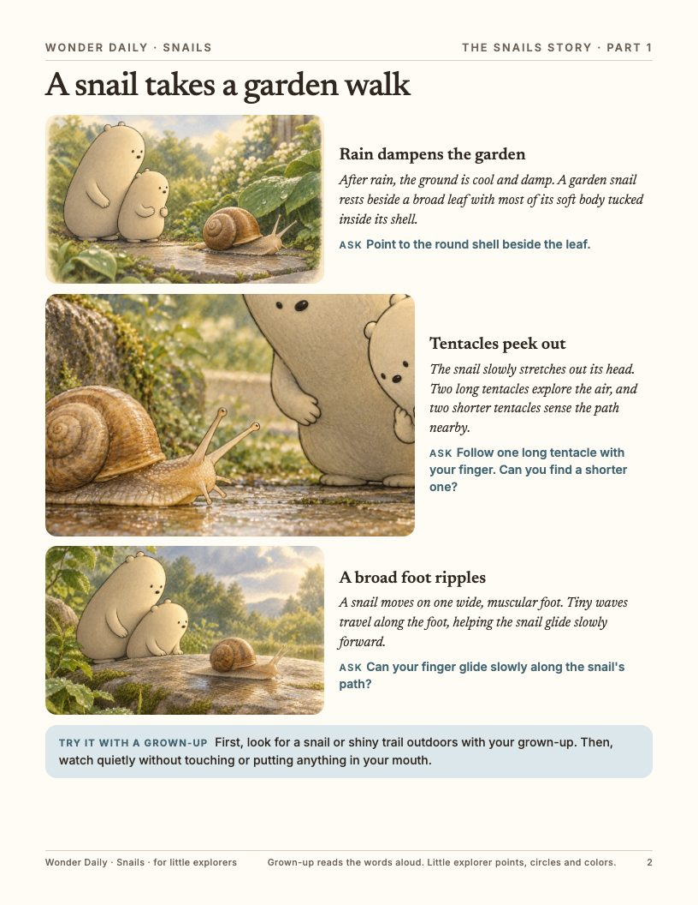
2. The story 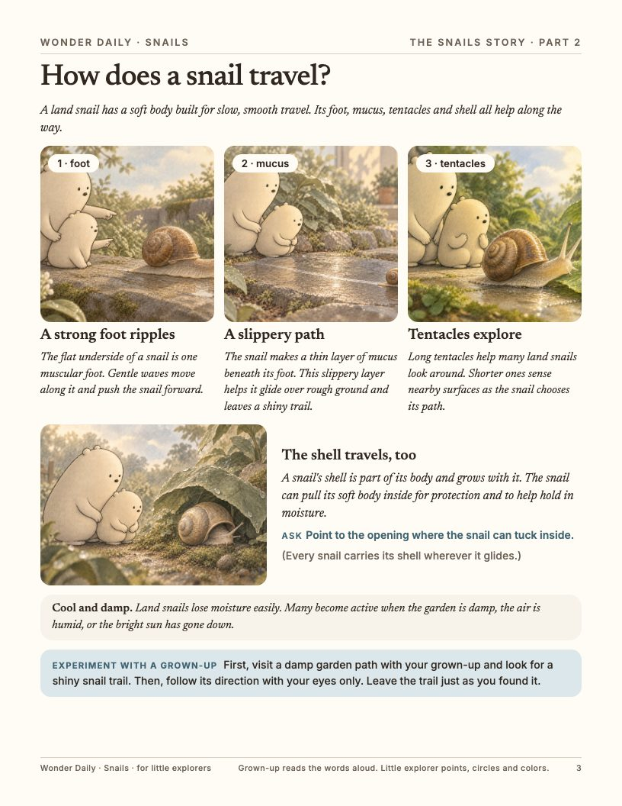
3. Science and an experiment 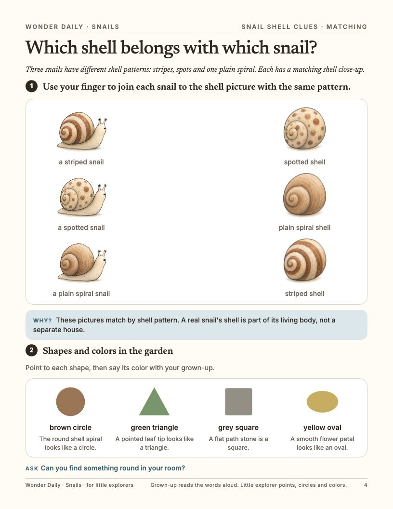
4. Matching, shapes and colors 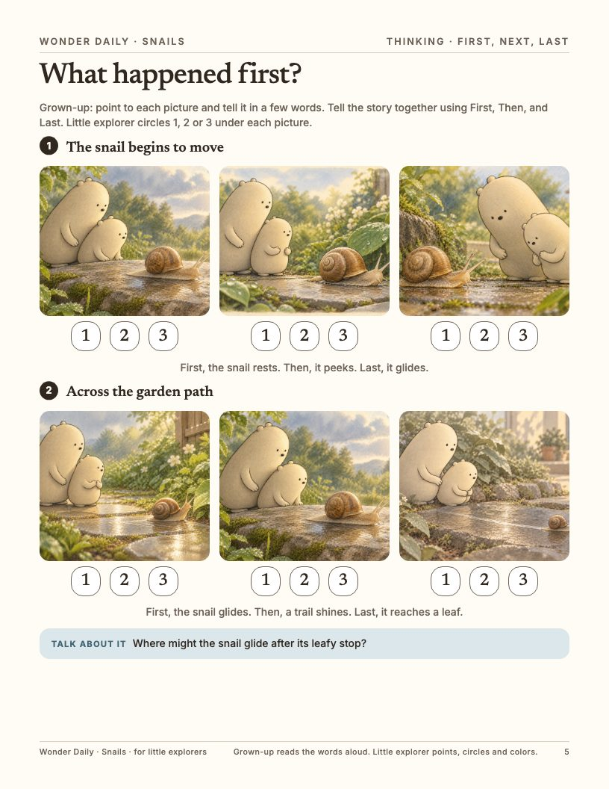
5. First, next, last 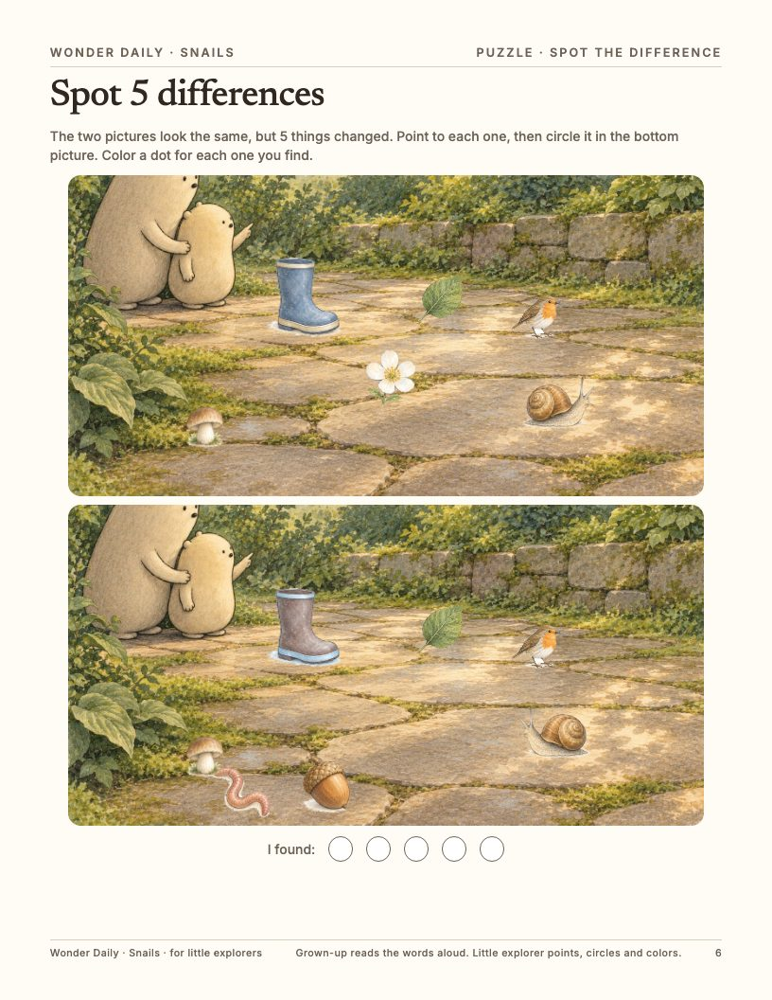
6. Spot the difference 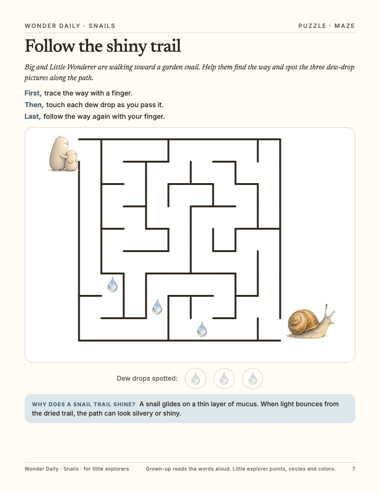
7. Maze 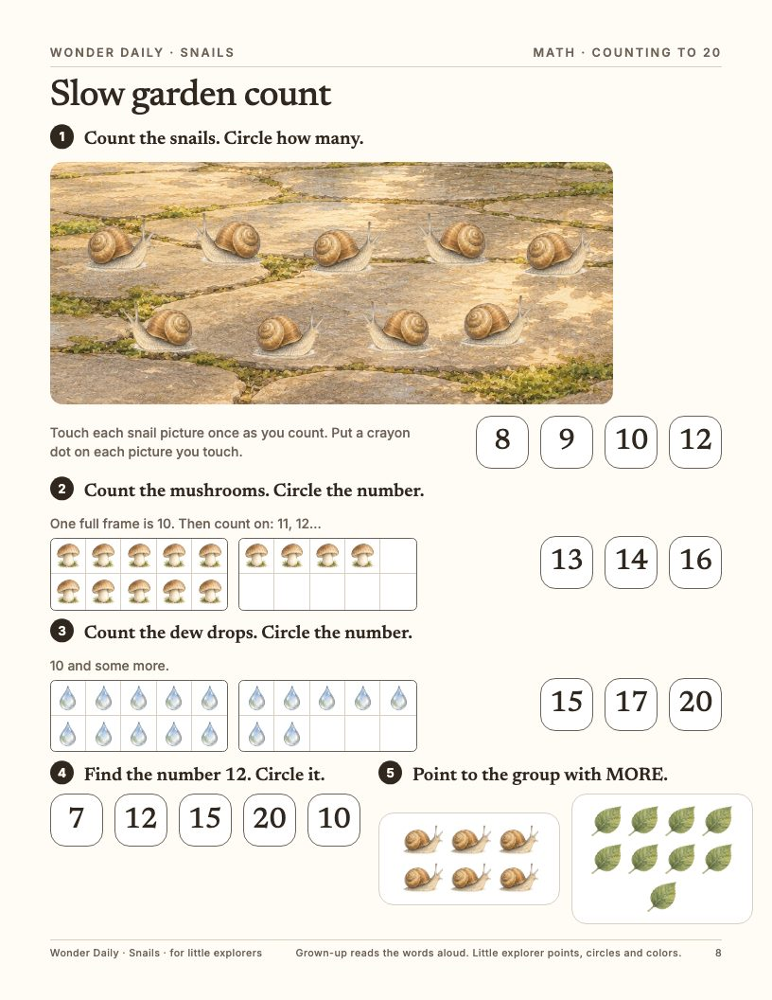
8. Counting to 20 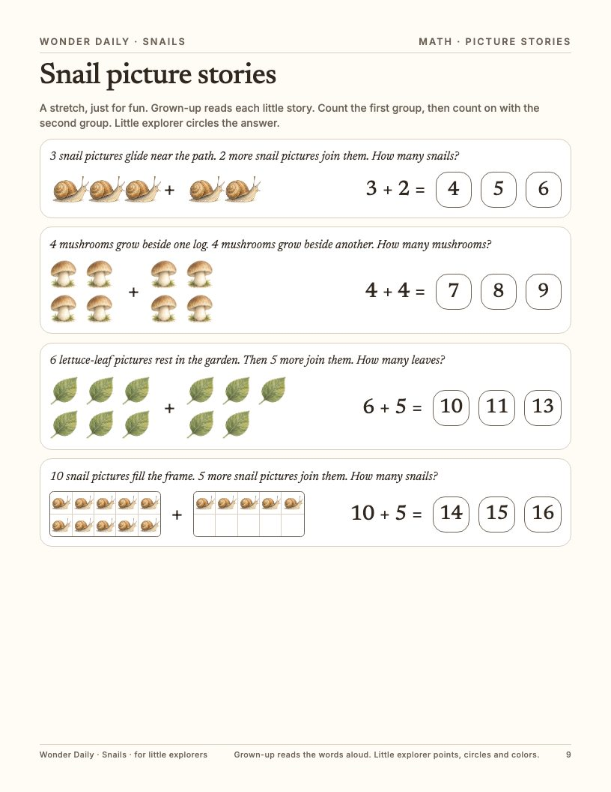
9. Picture stories 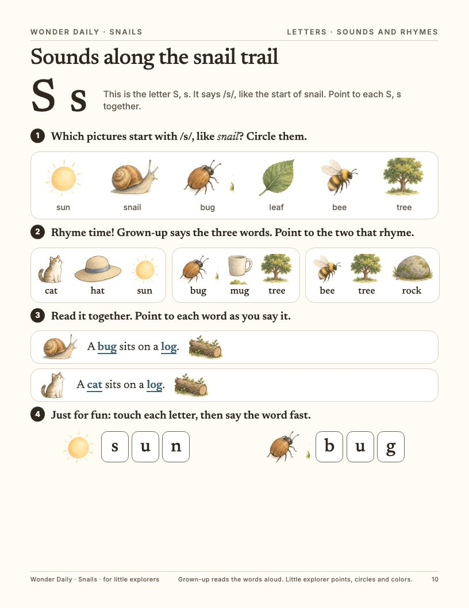
10. Sounds and rhymes 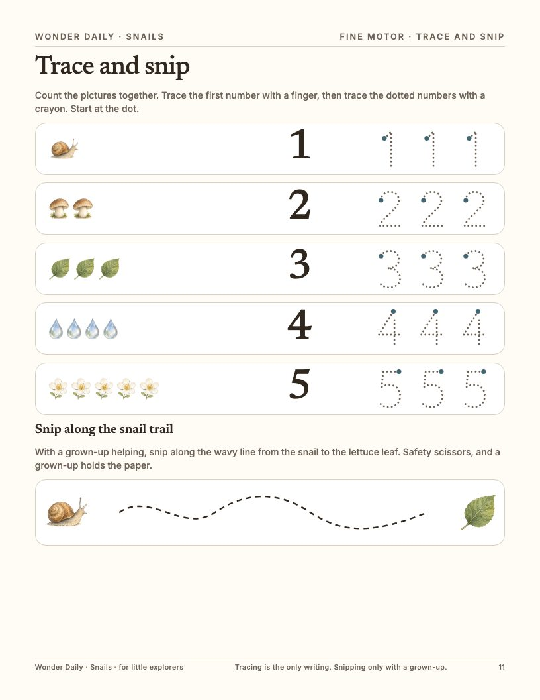
11. Trace and snip 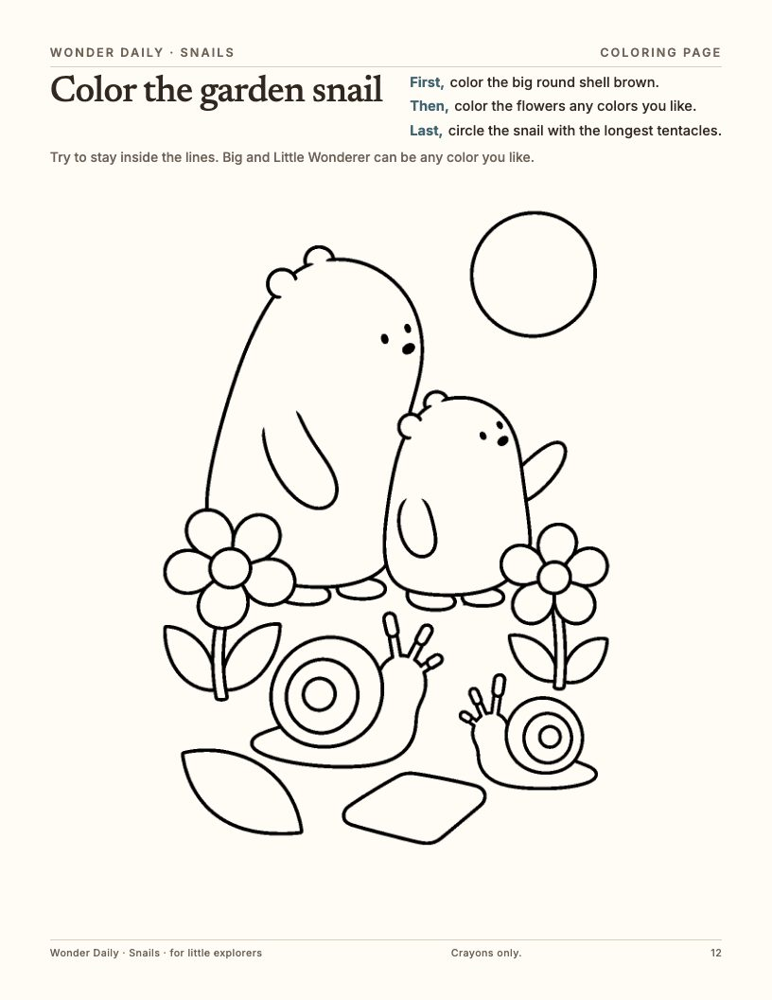
12. Coloring page